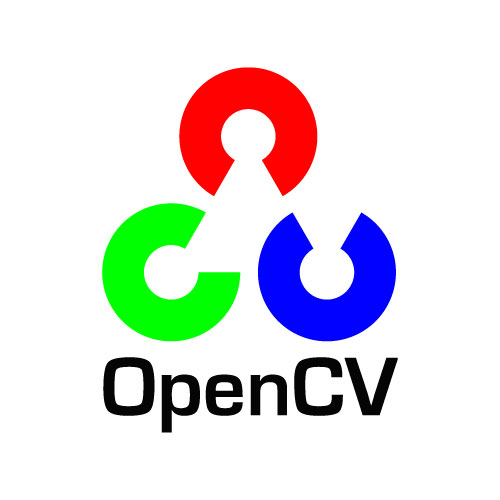

.png)
O que reconhecimento facial?
O reconhecimento facial é uma técnica de visão computacional que permite identificar pessoas em imagens ou vídeos através da análise das características únicas de seus rostos.
Tecnologias que utilizamos
Para realizar o reconhecimento facial usamos Python, e também a biblioteca FaceCV, que é uma extensão da OpenCV (Open Source Computer Vision Library) e a Dlib. O FaceCV e a dlib fornece diversas funções para detecção e reconhecimento facial, incluindo a detecção de rostos em imagens e vídeos, extração de características faciais, treinamento de modelos de reconhecimento facial e comparação de imagens para identificação de pessoas.


Porque python e não qualquer outra linguagem?
5 motivos para utilizala
- Simplicidade e facilidade de uso: Python é uma linguagem de programação que tem uma sintaxe clara e concisa, o que torna fácil para os desenvolvedores escreverem e entenderem o código. Além disso, a vasta gama de bibliotecas e frameworks disponíveis na linguagem, como a OpenCV e a FaceCV, permitem uma rápida prototipação de projetos de reconhecimento facial.
- Bibliotecas de Visão Computacional: Python tem uma grande variedade de bibliotecas de visão computacional disponíveis, incluindo OpenCV, Dlib, TensorFlow, Keras, entre outras. Essas bibliotecas são fáceis de usar, bem documentadas e têm uma comunidade ativa que fornece suporte e ajuda para os desenvolvedores.
- Compatibilidade multiplataforma: Python é uma linguagem multiplataforma, o que significa que os programas escritos em Python podem ser executados em diferentes sistemas operacionais, como Windows, Linux e MacOS. Isso é particularmente importante para projetos de reconhecimento facial que podem ser executados em diferentes dispositivos e plataformas.
- Aprendizado de Máquina: A linguagem Python é muito utilizada em projetos de Aprendizado de Máquina, que é uma técnica frequentemente usada em projetos de reconhecimento facial. Bibliotecas como o TensorFlow e o Keras tornam a construção de modelos de Aprendizado de Máquina mais fácil e acessível.